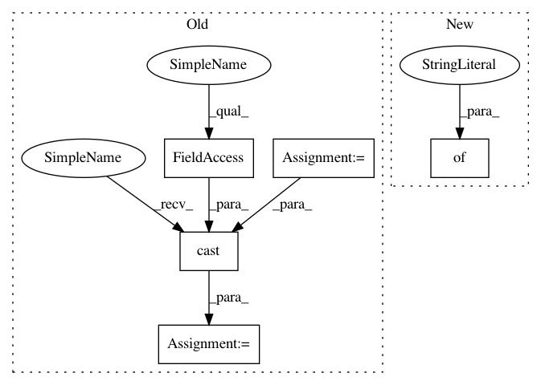

8b9acc51a5e27378a6b337018480ff9434bbf6f8,open_seq2seq/models/seq2seq.py,Seq2Seq,_build_forward_pass_graph,#Seq2Seq#Any#Any#,114
Before Change
}
encoder_output = self.encoder.encode(input_dict=encoder_input)
tgt_length_eval = tf.cast(1.2 * tf.cast(src_length, tf.float32), tf.int32)
decoder_input = {
"encoder_output": encoder_output,
"tgt_sequence": tgt_sequence if self.mode == "train" else None,
// when the mode is not "train", replacing correct tgt_length with
// somewhat increased src_length
"tgt_length": tgt_length if self.mode == "train" else tgt_length_eval
}
decoder_output = self.decoder.decode(input_dict=decoder_input)
decoder_samples = decoder_output.get("samples", None)
if self.mode == "train" or self.mode == "eval":
After Change
encoder_input = {"source_tensors": source_tensors}
encoder_output = self.encoder.encode(input_dict=encoder_input)
decoder_input = {"encoder_output": encoder_output}
if self.mode == "train":
decoder_input["target_tensors"] = target_tensors
decoder_output = self.decoder.decode(input_dict=decoder_input)
decoder_samples = decoder_output.get("samples", None)
In pattern: SUPERPATTERN
Frequency: 3
Non-data size: 5
Instances
Project Name: NVIDIA/OpenSeq2Seq
Commit Name: 8b9acc51a5e27378a6b337018480ff9434bbf6f8
Time: 2018-05-17
Author: igor.a.gitman@gmail.com
File Name: open_seq2seq/models/seq2seq.py
Class Name: Seq2Seq
Method Name: _build_forward_pass_graph
Project Name: analysiscenter/batchflow
Commit Name: 7fd49e352027b5e24d0f8ede917877e5d5ef945f
Time: 2017-11-10
Author: rhudor@gmail.com
File Name: dataset/models/tf/vgg.py
Class Name: VGG
Method Name: _build
Project Name: weinman/cnn_lstm_ctc_ocr
Commit Name: e605d5b1621d118435e23a15bedc31754b9a2b3b
Time: 2018-07-09
Author: am.lamsal@gmail.com
File Name: src/model_fn.py
Class Name:
Method Name: model_fn
Project Name: NVIDIA/OpenSeq2Seq
Commit Name: 8b9acc51a5e27378a6b337018480ff9434bbf6f8
Time: 2018-05-17
Author: igor.a.gitman@gmail.com
File Name: open_seq2seq/models/seq2seq.py
Class Name: Seq2Seq
Method Name: _build_forward_pass_graph